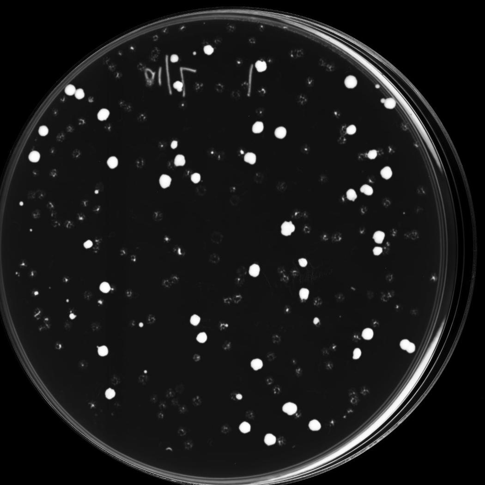
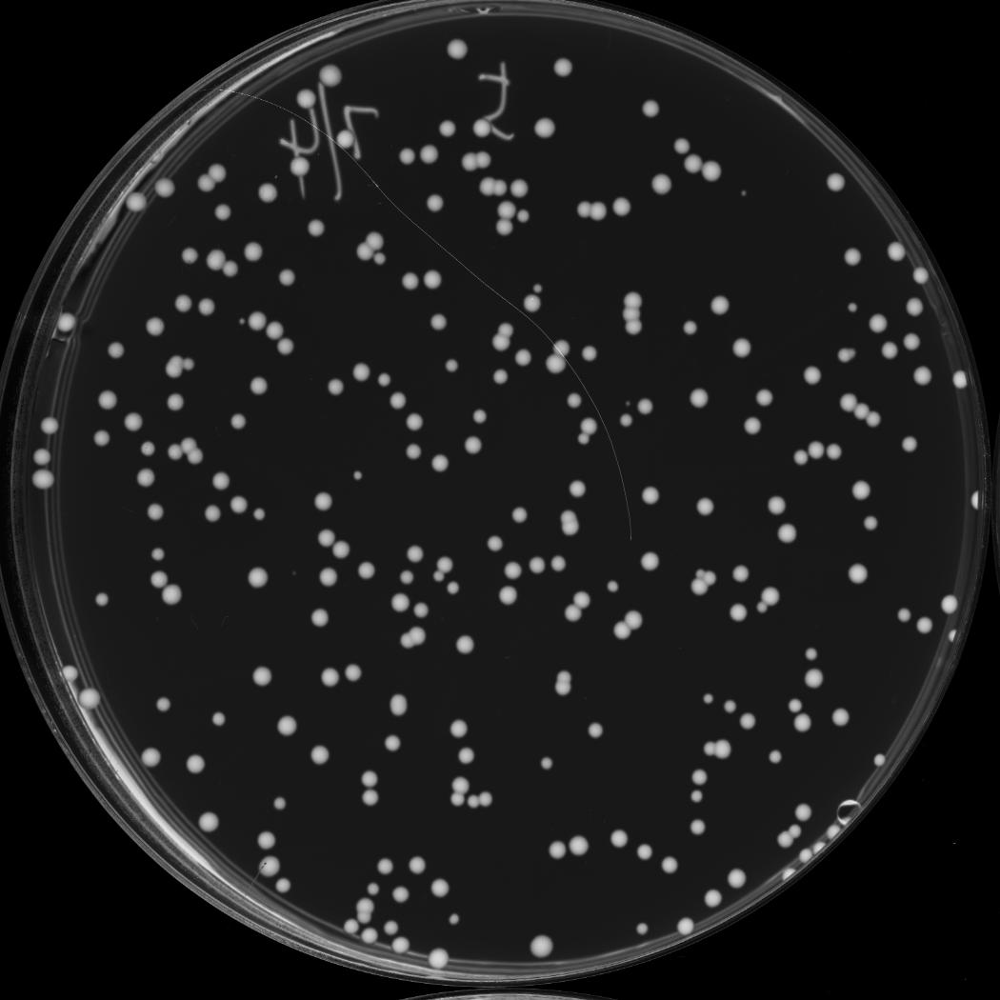
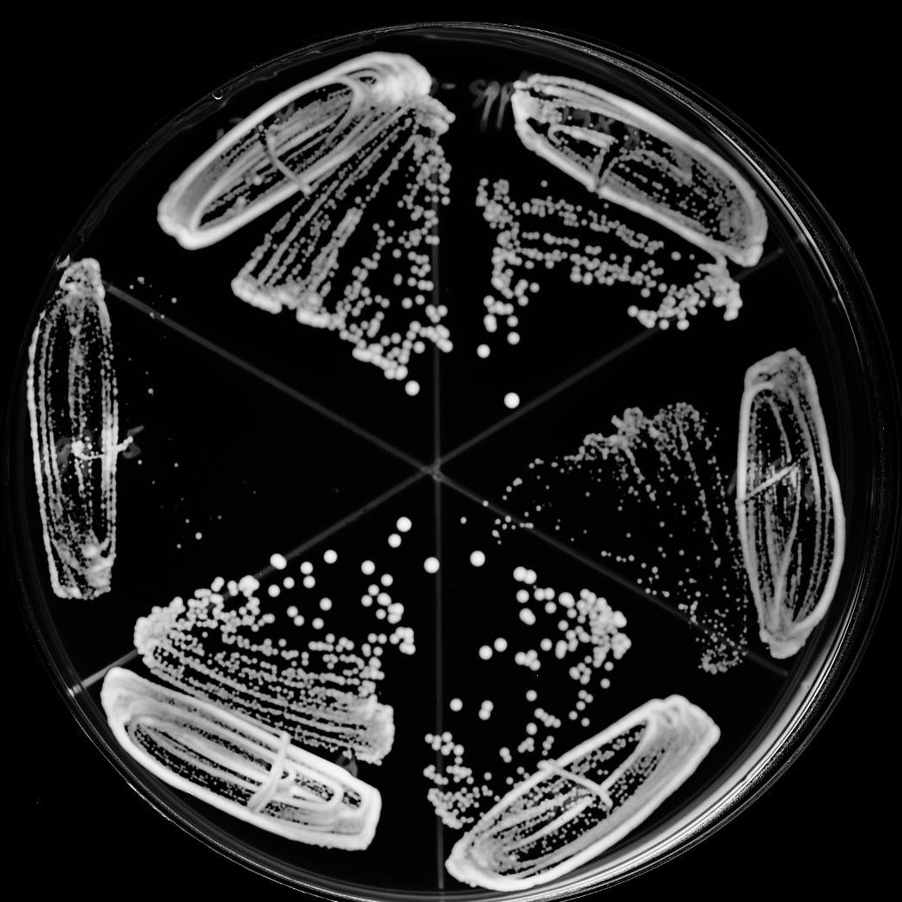

A

B
C
D

E

F
A: Candidate | No selection
B: Candidate | Counter-selection against the rescuing plasmid and selection for essential gene deletion
C: Control | No selection
D: Control | Counter-selection against the rescuing plasmid and selection for essential gene deletion
E: Quantification | Illustration of the strain arrangement of the semi-quantification plate
F: Quantification | Quantification in restreaking format